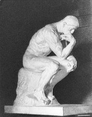

Auguste Rodin (1840-1917) tarafından yapılan anıtsal heykel Düşünen Adam (1880), dünyada en iyi bilinen sanat eserlerinden biridir. Dâhi/yaratıcının veya düşüncelerde kaybolmuş birisinin simgesi olarak tarihe geçti.
Figür, 1880 yılında Fransız hükümeti tarafından sipariş edilerek yeni Dekoratif Sanatlar Müzesi’ndeki Cehennem Kapıları için tasarlandı. Heykelin, tüm projeye kaynak olan İlâhî Komedya’nın ortaçağ dönemi İtalyan şairi Dante’yi temsil ettiği varsayılır.

Orijinal heykel, sadece 69 santimetre boyundaydı. Rodin, modeli için yaklaşık kırk yaşlarında (Kapılar’a başladığında kendisi de o yaştaydı) kaslı bir adam kullandı. Düşünen Adam, çenesini açık hâldeki sağ elinin tersine dayar. Omuzları tam anlamıyla düşüncelerinin ağırlığı altında gömülüdür. Vücudu gergindir ki, bu ayaklarının zemini kavramasından açıkça görülür. Figür, kapıların üst sırasının tam merkezi için düşünüldüğünden, ayaklarından ileride çıkıntı oluşturan başı, elleri ve dizleri ile öne doğru kaykılmıştır.
1902’de heykelin 2 metre uzunluğunda daha büyük bir versiyonu, Missouri, Saint Louis’deki Louisiana Alım Sergisi için Rodin’in denetimi altında Henri Lebosee tarafından dökümlendi. Ancak Rodin kopyayı reddetti. Diğer bir döküm, 1904 Salon’unda karma izleyiciler için sergilendi. Bir kamu alanında heykelin montajı nihayet Nisan 1906’da yer aldı. Birçok yıl sonra bir siyasi kriz sırasında, anıt bir Sosyalist simge olarak benimsendi. Nihayet 1922’de kamu törenlerine engel olduğu bahanesiyle Rodin Müzesi’nin bahçesine taşındı. Bugün Düşünen Adam’ın pek çok dökümü dünyanın her yerinde görülebilir, neredeyse hepsi orijinali gibi dışarıda sergilenmektedir.
EK BİLGİLER:
1. “Düşünen Adam”ı yaratırken Rodin’in aklında açıkça Michelangelo, özellikle Vincoli’de (Roma) S. Pietro’daki “Musa” ve S. Lorenzo’daki (Floransa) “Lorenzo de Medici” eserleri vardı.
2. “Düşünen Adam”ın bir dökümü, Meudon’daki Rodin’in mezarında da yer almaktadır.